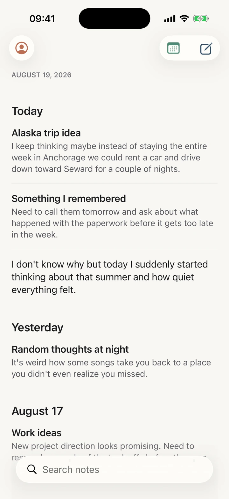
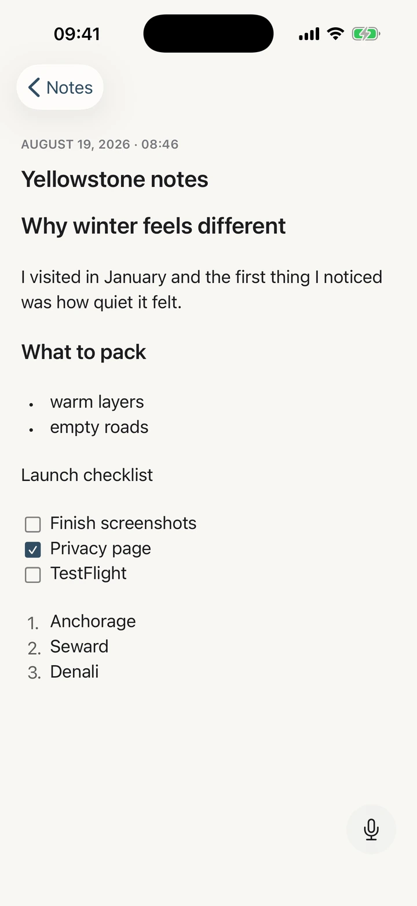
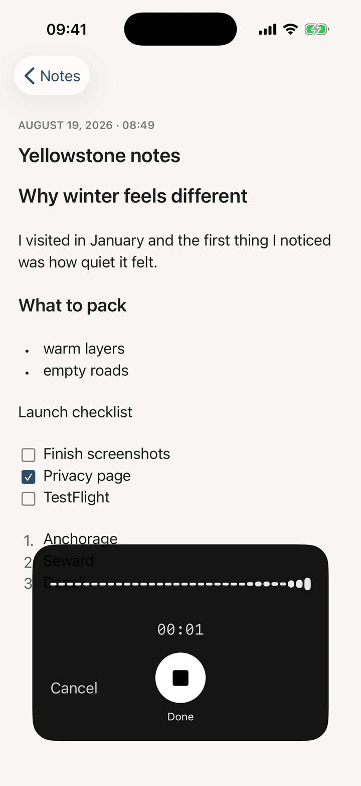
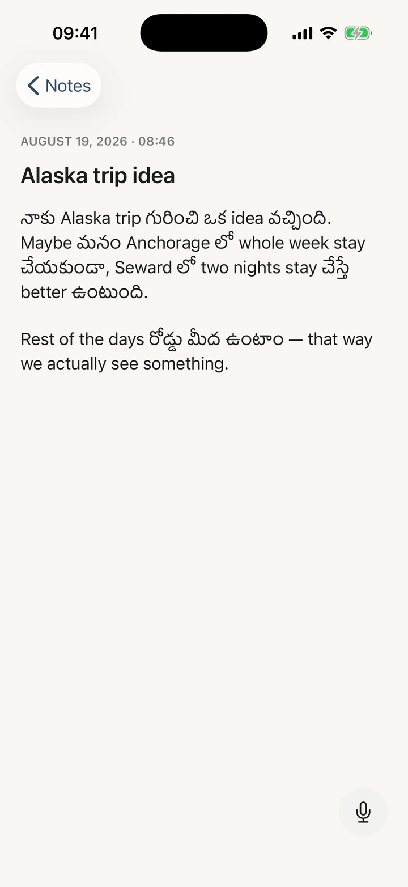
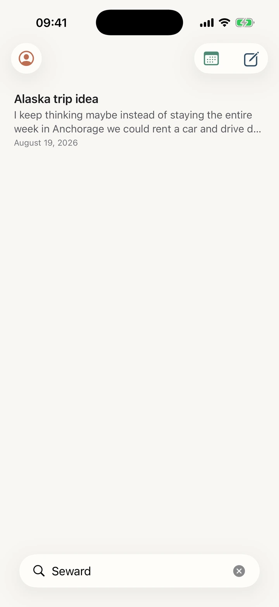
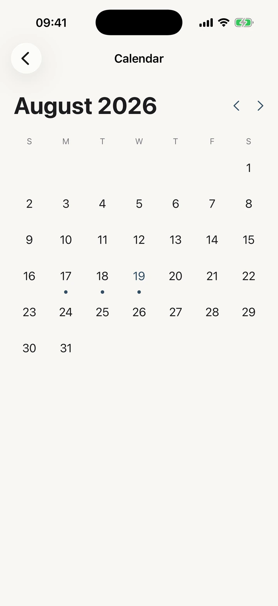
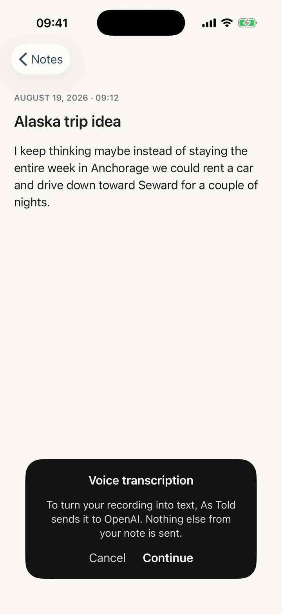
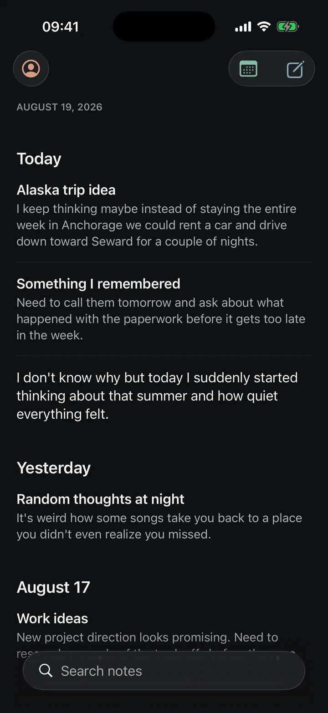

Anything you want to put into words.
Thoughts, notes, drafts, lists, plans, or whatever's on your mind. Write it or say it. As Told stays out of the way.

Some things are easier to type. Others are easier to say. As Told treats both the same.
Just start writing.
No folders to choose. No template to pick. No formatting toolbar competing for space. Open a note and write.
Your title is optional. Autosave is automatic. There is no Save button to reach for — the note is kept the moment it exists.
And when a thought needs shape, it takes it — headings, bullets, numbered lists, checkboxes. Return carries a list to the next line; Return on an empty item ends it. No toolbar appears to offer them.

Or just say it.
Tap the microphone and speak naturally. When you're finished, your words appear directly in the note.
No separate voice-note library. No transcript screen. No extra workflow — the same note, now with what you said in it.

Say it, and it takes shape.
A spoken thought can arrive already organised. Say “Heading”, “Bullet list”, “Checklist” or “New paragraph” and the note follows along.
“Heading. Alaska trip.”A heading
“Bullet list. Anchorage. Next item. Seward.”Two bullets
“Checklist. Call Ravi. Next item. Buy groceries.”Two checkboxes
“End list.”Back to prose
Only a clear, standalone command counts. Saying “my checklist is getting too long” stays a sentence — a missed command is recoverable, a phantom one rewrites your note.
It transcribes. It never edits.
Most tools want to help. Tighten the sentence. Fix the grammar. Make you sound more professional. As Told draws the line at punctuation and stops there — because the moment a tool changes which words you used, the thought stops being yours.
Here is the whole boundary, in one thought.
Actually I don't know maybe we can go Saturday but if Ravi is coming then Sunday is probably better what do you think
Actually, I don't know. Maybe we can go Saturday, but if Ravi is coming, then Sunday is probably better. What do you think?
Ravi and I should probably go on Sunday instead of Saturday.
Punctuation and capitalization are how writing represents speech, so it supplies them. Every word above is still the one you chose — the hedging, the doubling back, the question at the end. That last version is shorter, cleaner, and no longer something you said.

Stop translating yourself.
Most dictation assumes one language per sentence. So it picks one, and quietly converts the rest — your Telugu comes back as English, your Devanagari comes back in Latin letters, and the sentence you actually said no longer exists anywhere.
As Told treats the mix as the point rather than a problem to resolve. Telugu stays in Telugu script. Hindi stays in Devanagari. The English you genuinely reached for stays English. Nothing is normalised on the way in.
EnglishI keep coming back to the Alaska idea — maybe two nights in Seward instead of the whole week in Anchorage.
Telugu + Englishనాకు Alaska trip గురించి ఒక idea వచ్చింది. Maybe మనం Seward లో two nights stay చేస్తే better ఉంటుంది.
Hindi + Englishमुझे लगता है कि Anchorage में पूरा हफ़्ता रुकने के बजाय हम Seward में two nights रुकें — that would be better.
One idea, said three ways by three people. Not one of them flattened into a single language.
Nothing to organize.
Every note automatically finds its place in your timeline. Scroll when you want to browse, search when you remember the words, and use the calendar when you remember the day.


Your writing isn't an account.
As Told doesn't ask you to create an account just to write something down. Your note library lives on your iPhone, and Face ID is there when you want another layer.

No account required
Open the app and start writing. There's no sign-up, no email, no password.
Notes stay on your device
Your note library is stored locally on your iPhone — not in a cloud database of your notes.
Face ID protection
Turn it on when you want it. Your notes stay hidden in the app switcher until you unlock.
Voice is the one place something leaves your phone — and As Told asks before it does. The first time you finish a recording, it tells you plainly that the audio goes to OpenAI to be turned into text, that nothing else from your note is sent, and that the recording isn't kept afterwards. Answer once; it never asks again.
Yours, day or night.
Choose Light, Dark, or follow your iPhone automatically. Dark mode is designed on purpose — never just an inverted screen.

Less, deliberately.
- No account
- No folders
- No streaks
- No prompts
- No AI rewriting
- No productivity system
Just somewhere to put a thought.
Whatever's on your mind.
Write it. Say it. Keep it.
For iPhone. Questions in the meantime? Get in touch.